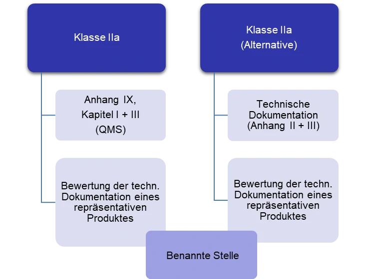
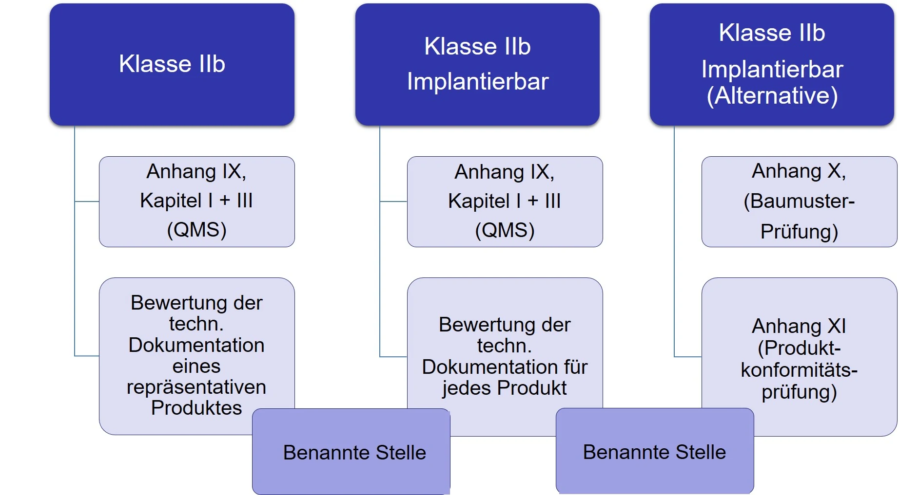
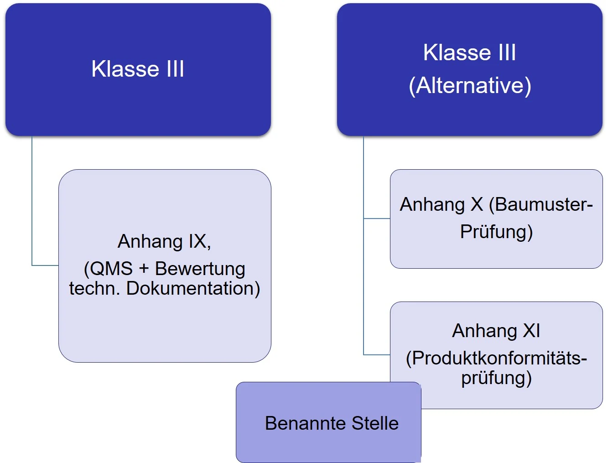

Konformitätsbewertungsverfahren
Artikel 52 der Verordnung (EU) – 2017/745 (MDR) fordert von den Herstellern, dass diese bevor sie ein Medizinprodukt in Verkehr bringen, eine Bewertung der Konformität durchführen müssen.
Einführung
Durch eine solche Konformitätsbewertung stellen die Hersteller selber fest, dass Ihre Medizinprodukte die grundlegenden Anforderungen der Verordnungen, hier z.B. der MDR erfüllen. Erst wenn ein solches Verfahren positiv abgeschlossen wurde, dürfen die Produkte das CE-Kennzeichen tragen. Dies gilt auch für Produkte, die vom Hersteller in Betrieb genommen werden, obwohl sie noch nicht in Verkehr gebracht wurden.
Die Anhänge IX bis XI (MDR) beschreiben drei verschiedene Konformitätsbewertungsverfahren:
- Anhang IX: Konformitätsbewertung auf der Grundlage eines Qualitätsmanagementsystems und einer Bewertung der technischen Dokumentation
- Anhang X: Konformitätsbewertung auf der Grundlage einer Baumusterprüfung
- Anhang XI: Konformitätsbewertung auf der Grundlage einer Produktkonformitätsprüfung
Welches Verfahren anzuwenden ist, hängt von der Klasse des jeweiligen Medizinproduktes ab.
Klasse I – Produkte
Laut MDR, Artikel 52 können die „Hersteller von Produkten der Klasse I, die Konformität ihrer Produkte durch Ausstellung einer EU-Konformitätserklärung gemäß Artikel 19 erklären und nachweisen, nachdem sie die technische Dokumentation gemäß den Anhängen II und III erstellt haben (siehe Abb. 1). Bei Produkten, die in sterilem Zustand in den Verkehr gebracht werden (Klasse Is), bei Produkten mit Messfunktion (Klasse Im) oder bei Produkten, bei denen es sich um wiederverwendbare chirurgische Instrumente handelt (Klasse Ir), wendet der Hersteller die in Anhang IX Kapitel I und III oder in Anhang XI Teil A aufgeführten Verfahren an. Die Beteiligung der Benannten Stelle an diesen Verfahren ist jedoch begrenzt
- a) bei Produkten, die in sterilem Zustand (Is) in Verkehr gebracht werden, auf die Aspekte, die mit der Herstellung, der Sicherung und der Aufrechterhaltung steriler Bedingungen zusammenhängen,
- b) bei Produkten mit Messfunktion (Im) auf die Aspekte, die mit der Konformität der Produkte mit den messtechnischen Anforderungen zusammenhängen,
- c) bei wiederverwendbaren chirurgischen Instrumenten (Ir) auf die Aspekte, die mit der Wiederverwendung in Zusammenhang stehen, insbesondere die Reinigung, Desinfektion, Sterilisation, Wartung und Funktionsprüfung sowie die damit verbundenen Gebrauchsanweisungen
Abbildung 1: Zusammenfassung der Konformitätsbewertungsverfahren für die Klasse I – Produkte.
Klasse II - Produkte
Produkte der Klasse IIa können zwischen 2 Konformitätsverfahren wählen. Artikel 52 der MDR sagt dazu: „Hersteller von Produkten der Klasse IIa unterliegen einer Konformitätsbewertung gemäß Anhang IX Kapitel I und III sowie einer Bewertung der technischen Dokumentation — gemäß Abschnitt 4 jenes Anhangs — zumindest eines repräsentativen Produkts jeder Produktkategorie. Alternativ können die Hersteller sich dafür entscheiden, die in den Anhängen II und III genannte technische Dokumentation zu erstellen, in Kombination mit einer Konformitätsbewertung gemäß Anhang XI Abschnitt 10 oder Abschnitt 18. Die Bewertung der technischen Dokumentation wird für zumindest ein repräsentatives Produkt jeder Produktkategorie durchgeführt“ (siehe Abb. 2).
Abbildung 2: Zusammenfassung der Konformitätsbewertungsverfahren für die Klasse IIa – Produkte.
Produkte der Klasse IIb werden aufgeteilt in Klasse IIb und Klasse IIb implantierbare Produkte. Für letztere stehen wiederum 2 Bewertungsverfahren zur Auswahl. Die MDR, Artikel 52 fordert für diese Produkte: „Hersteller von Produkten der Klasse IIb unterliegen einer Konformitätsbewertung gemäß Anhang IX Kapitel I und III, sowie einer Bewertung der technischen Dokumentation — gemäß Abschnitt 4 des genannten Anhangs — zumindest eines repräsentativen Produkts pro generischer Produktgruppe. Bei implantierbaren Produkten der Klasse IIb mit Ausnahme von Nahtmaterial, Klammern, Zahnfüllungen, Zahnspangen, Zahnkronen, Schrauben, Keilen, Zahn- bzw. Knochenplatten, Drähten, Stiften, Klammern und Verbindungsstücken wird die Bewertung der technischen Dokumentation gemäß Anhang IX Abschnitt 4 jedoch für jedes Produkt vorgenommen. Alternativ können die Hersteller sich für eine Konformitätsbewertung gemäß Anhang X in Kombination mit einer Konformitätsbewertung gemäß Anhang XI entscheiden“ (siehe Abb.3).
Abbildung 3: Zusammenfassung der Konformitätsbewertungsverfahren für die Klasse IIb – Produkte.
Klasse III – Produkte
Auch bei diesen Produkten können die Hersteller zwischen 2 alternativen Konformitätsbewertungsverfahren wählen. Der Abschnitt in Artikel 52 der MDR lautet: „Hersteller von Produkten der Klasse III unterliegen einer Konformitätsbewertung gemäß Anhang IX. Alternativ können die Hersteller sich für eine Konformitätsbewertung gemäß Anhang X in Kombination mit einer Konformitätsbewertung gemäß Anhang XI entscheiden“ (siehe Abb.4). Abbildung 4: Zusammenfassung der Konformitätsbewertungsverfahren für die Klasse III – Produkte.
Die Abschnitte 8 bis 11 des Artikels 52 der MDR beschreiben die Verfahren die für Sonderanfertigungen, Produkte mit Stoffen, die dazu bestimmt sind in den menschlichen Körper einzudringen, usw.